Thick pipe with internal pressure: axially symmetric model
Contents
Link to the m-file.
Description
This is a simple modification of the full three-dimensional simulation of the tutorial pub_thick_pipe that implements the axially-symmetric model reduction procedure.
An infinitely long thick walled cylindrical pipe with inner boundary radius of 3 mm and outer boundary radius of 9 mm is subjected to an internal pressure of 1.0 MPa. A wedge with thickness of 2 mm and a 90-degree angle sector is considered for the finite element analysis. The material properties are taken as isotropic linear elastic with 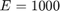 MPa and 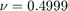 to represent nearly incompressible behavior. This problem has been proposed to by MacNeal and Harder as a test of an element's ability to represent the response of a nearly incompressible material. The plane-strain condition is assumed in the axial direction of the pipe which together with the radial symmetry confines the material in all but the radial direction and therefore amplifies the numerical difficulties associated with the confinement of the nearly incompressible material.
There is an analytical solution to this problem. Timoshenko and Goodier presented the original solution of Lame in their textbook. We are going to compare with both the stress distribution (radial and hoop stresses) and the displacement of the inner cylindrical surface.

|
| Figure 1. Definition of the geometry of the internally pressurized thick pipe |
References:
- Macneal RH, Harder RL (1985) A proposed standard set of problems to test finite element accuracy. Finite Elements in Analysis and Design 1: 3-20.
- Timoshenko S. and Goodier J. N., Theory of Elasticity, McGraw-Hill, 2nd ed., 1951.
Solution
function pub_thick_pipe_axi
u= physical_units_struct;
Internal radius of the pipe.
a=3*u.MM;
External radius of the pipe.
b=9*u.MM;
Thickness of the slice.
t=2*u.MM;
Geometrical tolerance.
tolerance =a/10000;
Young's modulus and Poisson's ratio.
E=1000*u.MEGA*u.PA;
nu=0.499;
Applied pressure on the internal surface.
p= 1*u.MEGA*u.PA;
Analytical solutions. Radial stress:
radial_stress =@(r)p*a.^2/(b^2-a^2).*(1-b^2./r.^2);
Circumferential (hoop) stress:
hoop_stress =@(r)p*a.^2/(b^2-a^2).*(1+b^2./r.^2);
Radial displacement:
radial_displacement=@(r)p*a^2*(1+nu)*(b^2+r.^2*(1-2*nu))/(E*(b^2-a^2).*r);;
Therefore the radial displacement of the loaded surface will be:
urex = radial_displacement(a);
The mesh parameters: The numbers of element edges axially, and through the thickness of the pipe wall (radially).
na=1; nt=5;
Note that the material object needs to be created with the proper model-dimension reduction in mind. In this case that is the plane-strain assumption.
prop=property_deformation_linear_iso(struct('E',E,'nu',nu)); mater = material_deformation_linear_biax (struct('property',prop,... 'reduction', 'axisymm'));
This function will execute the simulation for a particular finite element with selected numerical integration rules. The arguments are:
description = descriptive string mf = handle to a block-meshing function femmf = handle to a function constructing the finite element model machine, surface_integration_rule = surface integration rule
function execute_simulation (description, mf, femmf, ... surface_integration_rule) % Create the mesh and initialize the geometry. First we are going % to construct the block of elements with the first coordinate % corresponding to the thickness in the radial direction, and the second % coordinate is the thickness in the axial direction. [fens,fes]= mf (b-a, t, nt, na, struct('axisymm', true)); % Extract the boundary and mark the finite elements on the % interior surface. bdry_fes = mesh_boundary(fes, struct('axisymm', true)); bcl = fe_select(fens, bdry_fes, ... struct ('box',[0,0,-inf,inf],'inflate',tolerance)); internal_fenids= connected_nodes (subset(bdry_fes,bcl)); % Now shape the block into the actual wedge piece of the pipe. for i=1:count (fens) fens.xyz(i,:)=fens.xyz(i,:)+[a,0]; end % Compose the model data clear model_data model_data.fens =fens; % The region is cconstructed directly with the finite element % model machine produced according to the instructions coded for % each element differently. This gives us an opportunity to exert % find control over which integration rule is to be used. In % particular, the selective reduced integration rule may be % introduced. clear region region.femm= femmf(fes); model_data.region{1} =region; % The plane-strain condition in the axial direction is specified by selecting nodes % on the plane y=0 and y=t. clear essential essential.component= [2]; essential.fixed_value= 0; essential.node_list = [... fenode_select(fens,... struct ('box',[-inf,inf 0 0 ],'inflate',tolerance)),... fenode_select(fens,... struct ('box',[-inf,inf t t],'inflate',tolerance))]; model_data.boundary_conditions.essential{1} = essential; % The traction boundary condition is applied in the radial % direction. clear traction traction.fes =subset(bdry_fes,bcl);; traction.traction=[p;0]; traction.integration_rule =surface_integration_rule; model_data.boundary_conditions.traction{1} = traction; % Call the statics solver to obtain the displacement solution. model_data =deformation_linear_statics(model_data); % Transfer the solution of the displacement to the nodes on the % internal cylindrical surface and convert to % cylindrical-coordinate displacements there. uv=gather_values (model_data.u,internal_fenids); % Report the relative displacement on the internal surface: disp(['(Approximate/true displacement) at the internal surface: '... num2str(mean(uv(:,1))/urex*100) '%']) % Produce a plot of the radial stress component in the cylindrical % coordinate system. Note that this is the usual representation of % stress using nodal stress field. model_data.postprocessing.u_scale= 200; model_data.postprocessing.stress_component=1; model_data.postprocessing.stress_range=[-p,0]; % model_data.postprocessing.outputRm =[cos(90/180*pi),-sin(90/180*pi); % sin(90/180*pi),cos(90/180*pi)]; model_data=deformation_plot_stress(model_data); draw_annotation(model_data.postprocessing.gv,... [0.35, 0.8, 0.35, 0.075],[description,'-Cylindrical'],... struct('backgroundcolor','w')) view(2); snapnow; % Produce a plot of the radial stress component in an ad hoc output coordinate system. % This coordinate system is rotated from the cylindrical coordinate % system in the plane of the generating section by 90?. Therefore, % the radial stress component will be 2. model_data.postprocessing.u_scale= 200; model_data.postprocessing.stress_component=2; model_data.postprocessing.stress_range=[-p,0]; % Define the output coordinate system: model_data.postprocessing.outputRm =[cos(90/180*pi),-sin(90/180*pi); sin(90/180*pi),cos(90/180*pi)]; model_data=deformation_plot_stress(model_data); draw_annotation(model_data.postprocessing.gv,... [0.35, 0.8, 0.35, 0.075],[description,'-Ad hoc'],... struct('backgroundcolor','w')) view(2); snapnow; % Produce a plot of the solution components in the cylindrical % coordinate system. % Plot the analytical solution. figure; r =linspace(a,b,100); plot(r,radial_stress(r),'k.-','linewidth',3); hold on context. output='Cauchy'; idat.component =1; % Radial component of stress % For all finite elements in the finite element model machine: for ii=1:count(model_data.region{1}.femm.fes) % Now go through the integration points in the finite element % number ii, compute the stress components in the global % Cartesian coordinate system, then transform the stress % components into the cylindrical coordinate system. idat.r =[]; idat.s =[]; idat = inspect_integration_points(model_data.region{1}.femm, ... model_data.geom, model_data.u, [], ii, context,... @inspector, idat); % Plot the stress at each integration point in the graph. for j =1:length(idat.r) plot(idat.r(j),idat.s(j),'rx','linewidth',3); hold on end end title([description]) labels('Radial distance', 'Stress $\sigma_r$') set_graphics_defaults end
This is a helper function for the calculation of the integration-point stresses.
function idat =inspector(idat, out, xyz, u, pc) idat.r(end+1) =norm(xyz(1)); idat.s(end+1)=out(idat.component); end
Regular quadratic triangle
We start with the workhorse of most commonly used finite element packages, the quadratic triangle. Similarly to the quadratic tetrahedron in the 3-D version of this tutorial (pub_thick_pipe), the stress is polluted with oscillations. Definitely not as bad as in the plane-strain simulations when the triangles were distorted into shapes with curved edges, but the disturbances are there.
description ='T6';% tetrahedron mf =@T6_block; femmf =@(fes)femm_deformation_linear(struct('fes',fes,... 'material',mater,'integration_rule',tri_rule(struct('npts',3)))); surface_integration_rule=gauss_rule(struct('dim',1, 'order', 3)); execute_simulation (description, mf, femmf, surface_integration_rule);
(Approximate/true displacement) at the internal surface: 99.837%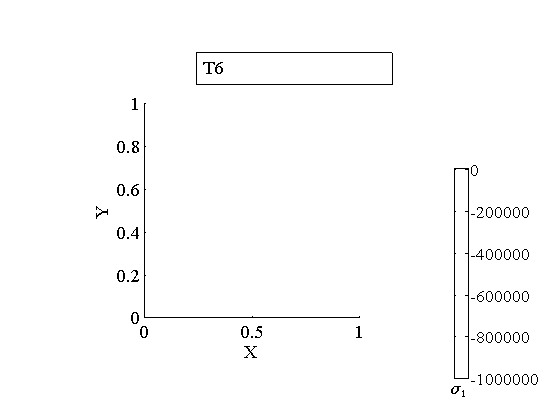 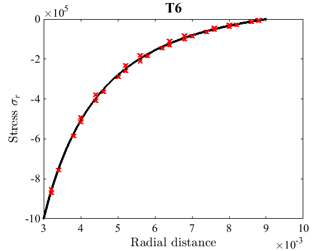 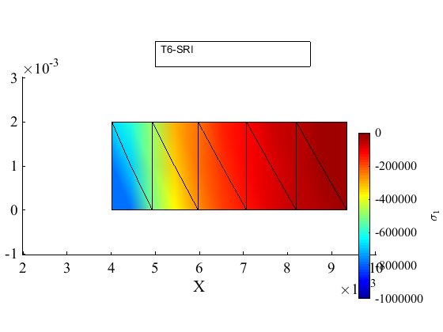
The same remedy of selective reduced integration as in full 3-D models will also work here. Is demonstrated by the simulation with the selective reduced integration quadratic triangle.
Selective reduced integration quadratic triangle
description ='T6-SRI'; mf =@T6_block; femmf =@(fes)femm_deformation_linear_sri(struct('fes',fes,... 'material',mater,... 'integration_rule_volumetric',tri_rule(struct('npts',1)),... 'integration_rule_deviatoric',tri_rule(struct('npts',3)))); surface_integration_rule=gauss_rule(struct('dim',1, 'order', 3)); execute_simulation (description, mf, femmf, surface_integration_rule);
(Approximate/true displacement) at the internal surface: 100.3951%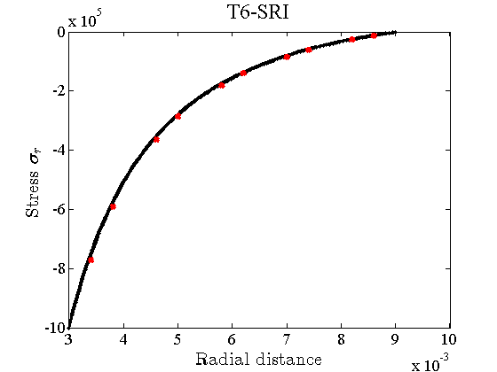 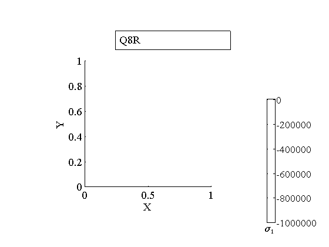 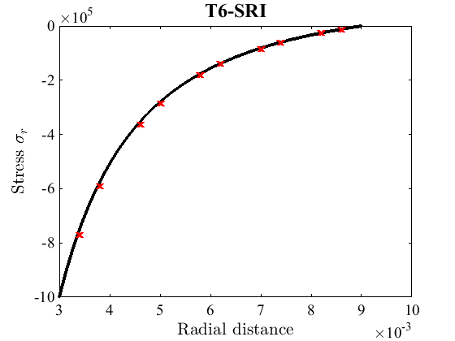
The selective reduced integration works very well with the T6 triangle.
An element that is often used in these situations is the uniformly under integrated serendipity (8-node) quadrilateral.
Reduced integration serendipity quadrilateral
The same finite element model machine as above is used, and the integration is the 2 x 2 Gauss rule (one order lower than that required for full integration which would be 3 x 3).
description ='Q8R'; mf =@Q8_block; femmf =@(fes)femm_deformation_linear(struct('fes',fes,... 'material',mater,... 'integration_rule',gauss_rule(struct('dim',2, 'order',2)))); surface_integration_rule=gauss_rule(struct('dim',1, 'order',3)); execute_simulation (description, mf, femmf, surface_integration_rule);
(Approximate/true displacement) at the internal surface: 100%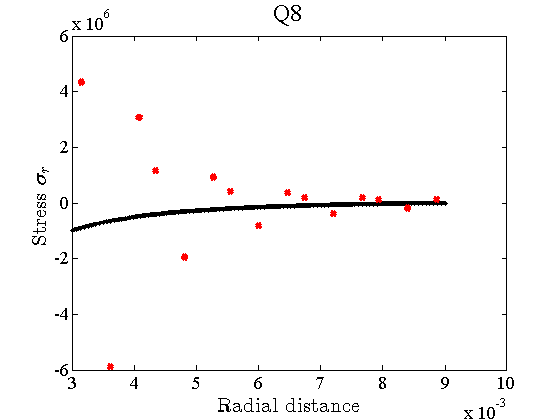 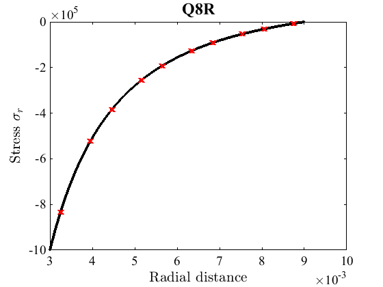
Full integration serendipity quadrilateral
Using the full-integration Gauss rule of 3 x 3 points clearly leads to disaster.
description ='Q8'; mf =@Q8_block; femmf =@(fes)femm_deformation_linear(struct('fes',fes,... 'material',mater,... 'integration_rule',gauss_rule(struct('dim',2, 'order',3)))); surface_integration_rule=gauss_rule(struct('dim',1, 'order',3)); execute_simulation (description, mf, femmf, surface_integration_rule);
(Approximate/true displacement) at the internal surface: 95.2401%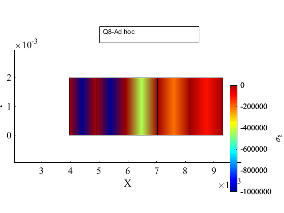 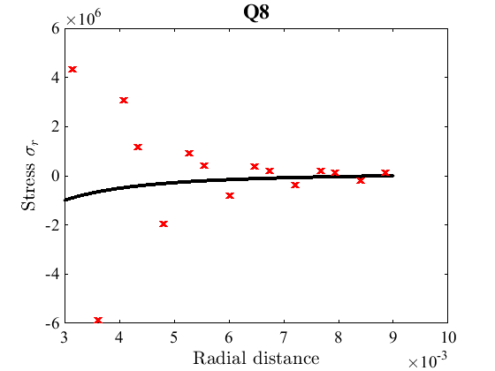
The stress is now totally unacceptable.
Discussion
The axially symmetric model is clearly very effective computationally, as the size is much reduced compared to the 3-D model. In conjunction with uniform or selective reduced integration it can be very accurate as well.
end